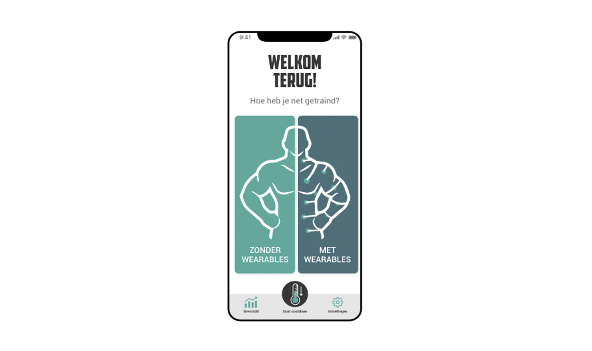
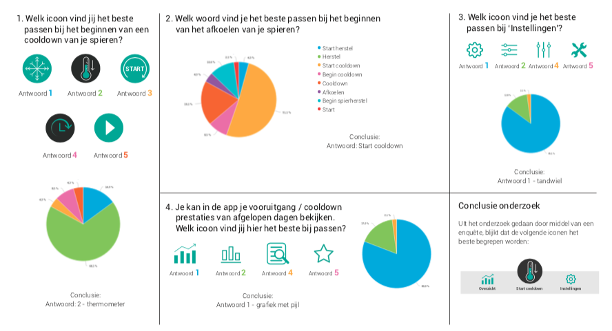
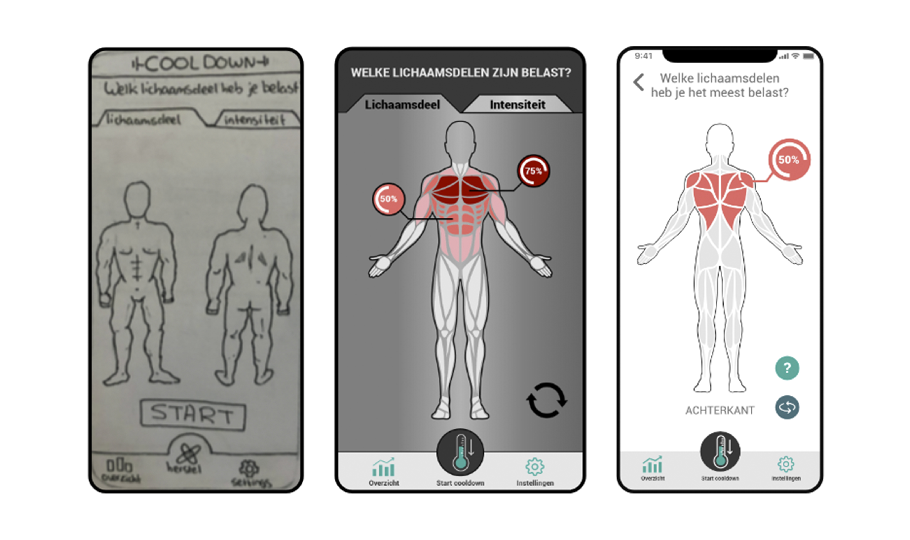

Evalueren
Cooldown // Propedeuse Jaar
Situatie
De opdracht bij het project sport was: Help gewichtheffer Teun zijn doelen te behalen middels een applicatie. Het doel van Teun was om betere spierherstel sessies te doen, zodat hij beter kan presteren op het Nederlands Kampioenschap. Het project sport was een team opdracht die ik samen met Sam, Syarah, Harun en Marvin heb gedaan.
Taak
Mijn taak was om samen met Syarah het lo-fi prototype te maken en zelf heb ik het hi-fi prototype ontworpen in Adobe XD. Mijn andere teamgenoten hielden zich bezig met het testplan en het testen met de doelgroep.
Activiteiten
Tijdens dit project hebben we meerdere iteratie slagen gemaakt, maar we zijn eerst begonnen met het maken van een concept en storyboard. Met het idee in ons hoofd hebben Syarah en ik samen het lo-fi prototype geschetst. Dit prototype gingen Sam, Harun en Marvin testen bij de doelgroep. Na de eerste testronde kwam er veel feedback terug van de doelgroep. De belangrijkste was dat er een aantal iconen niet werden begrepen. We zijn een enquête gaan maken met verschillende opties en hebben geluisterd naar de deelnemers welke zij het duidelijkst vonden:
Resultaat
Het resultaat van het vele testen is een duidelijke en frisse app die aansluit bij de doelgroep. Er zit een duidelijke flow in en is handig te gebruiken tijdens een cooldown door de duidelijke transitie-schermen tussen de oefeningen door. In de afbeeldingen hieronder is het resultaat van de iteraties goed te zien:
Reflectie
Dit project past goed bij deze competentie omdat we goed hebben gekeken naar de feedback die we kregen van de testpersonen en deze hebben toegepast op ons volgende prototype. We hebben de app continue getest en verbeterd. Wanneer er iets niet begrepen werd, zijn we eerst gaan kijken of meerdere testpersonen het zo ervaren. We hebben veel progressie gemaakt en kan daardoor echt zeggen dat ik blij ben met het eindresultaat.